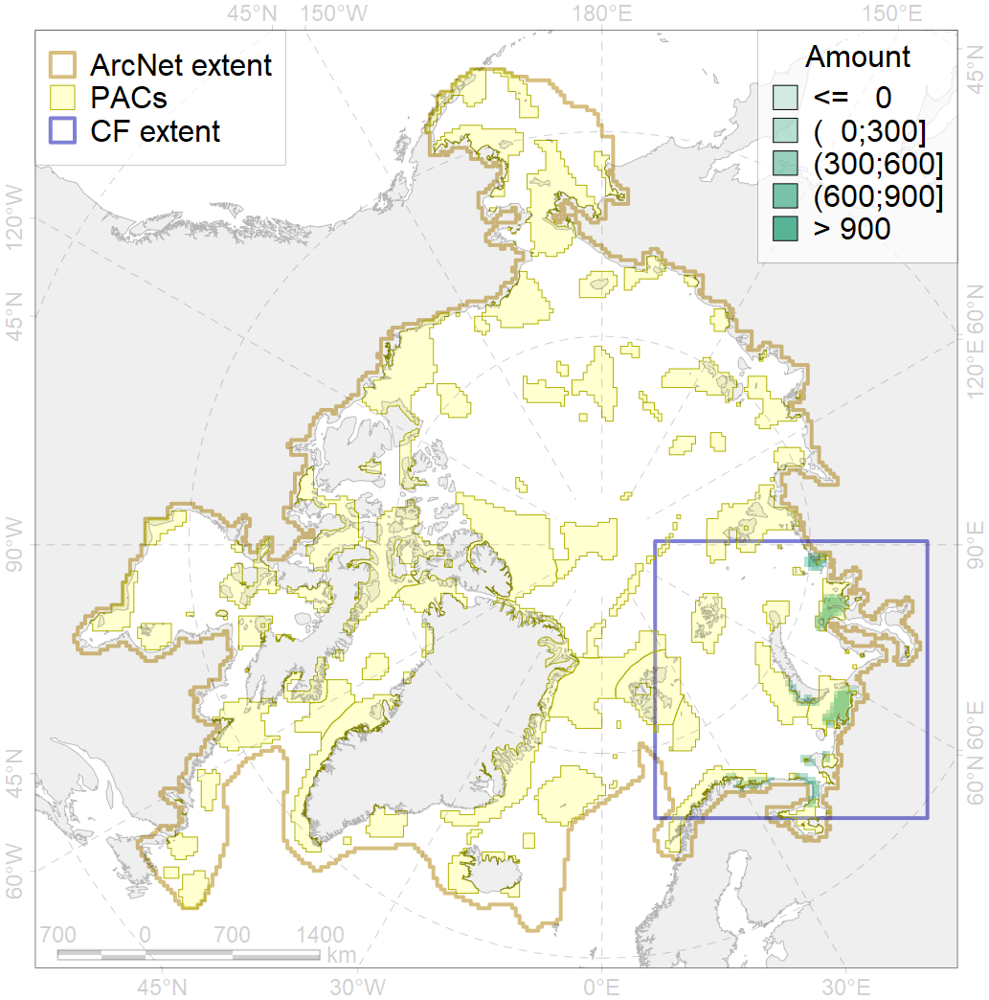
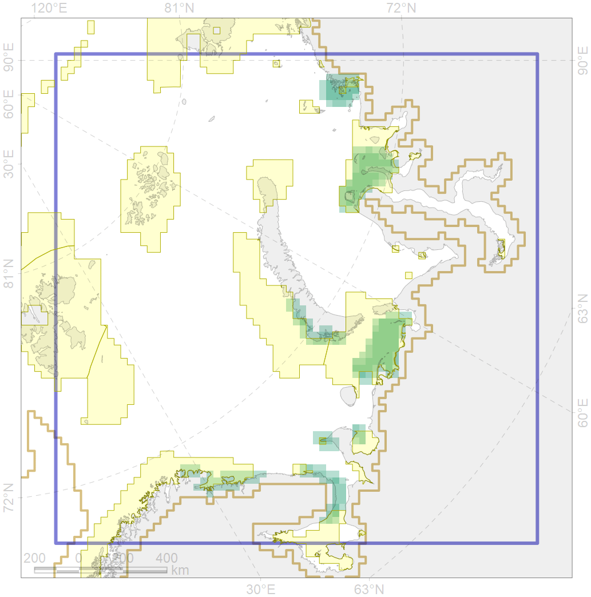

6043

| CF ID | 6043 |
| CF Name | Stellers eider (Polysticta stelleri) Atlantic moulting&migration stopovers |
| Time Period | 1999 |
| Source(s) | Koryakin et al 2001, Krasnov et al 2002, Petersen et al 2006 |
| Seasonality | July-September |
| Depth Horizon | <50 m |
| Methodology | Field Data |
| Author Name | Gavrilo, Tertitski |
| Notes | |
| Conservation Target Set in the Scenario | 0.528 |
| Conservation Target Achieved in the Scenario | 0.747 (Scenario: 141.4%) |
| PAC ID | Proportion in the PAC | Contribution to ArcNet Target Achievement | PAC’s Contribution to the Achieved Target |
|---|---|---|---|
| 15 | 1.8% | 3.5% | 2.4% |
| 16 | 28.5% | 53.4% | 37.8% |
| 20 | 35.3% | 64.9% | 45.9% |
| 21 | 2.7% | 4.3% | 3.0% |
| 23 | 1.8% | 2.8% | 2.0% |
| 25 | 1.2% | 1.4% | 1.0% |
| 26 | 2.9% | 3.3% | 2.3% |
| 27 | 2.4% | 4.1% | 2.9% |
| inner | 76.5% | 137.7% | 97.4% |
| outer | 23.5% | 3.7% | 2.6% |